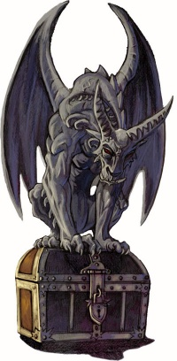
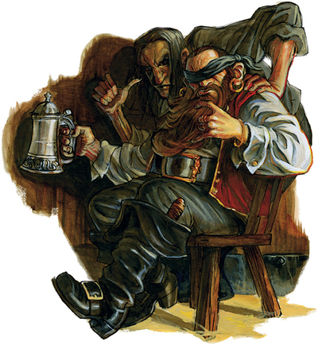
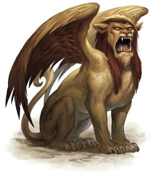

Énigmes
Voici plus de 50 énigmes pour pimenter les challenges des aventuriers, et essayer de faire fonctionner leurs méninges quelques minutes entre deux combats. Cliquez sur la case blanche sous le texte de l'énigme pour voir la réponse s'afficher.
Énigme 1
Si cela cache, ce n'est que pour mieux révéler.
Cela bloque autant que cela permet de passer.
La réponse est dans la question.
Que suis-je ?
Cela bloque autant que cela permet de passer.
La réponse est dans la question.
Que suis-je ?
Une énigme.
Énigme 2
Je suis le commencement de l’effroi,
La fin de la durée et de l’espace,
Le commencement de toutes extrémités,
Et la fin de chaque contrée.
La fin de la durée et de l’espace,
Le commencement de toutes extrémités,
Et la fin de chaque contrée.
La lettre E.
Énigme 3
Je suis vague en bord de mer.
Je descends des montagnes en hiver.
Sans moi vous n'aurez plus une larme.
Je descends des montagnes en hiver.
Sans moi vous n'aurez plus une larme.
L'eau.
Énigme 4
Celui qui le fabrique le vend, celui qui l'achète ne s'en sert pas, celui qui s'en sert ne le sais pas.
Qu'est-ce ?
Qu'est-ce ?
Un cercueil.
Énigme 5
Un forgeron tient une épée incandescente avec une pince. Un magicien apparaît et lui dit: "Si tu me donnes 1 pièce d'or, je la lèche". Le forgeron lui donne alors une pièce, et le magicien s'exécute sans se brûler.
Comment a-t-il fait ?
Comment a-t-il fait ?
Il a léché la pièce, pas l'épée.
Énigme 6
Un roi avait un bouffon qu'il aimait beaucoup. Mais celui-ci accomplit un jour un acte si répréhensible que, selon les lois du pays, il fut condamné à mort. Alors le roi lui dit: "Je ne peux pas te faire grâce mais je t'accorde une faveur : tu vas choisir toi-même la façon dont tu veux mourir". Le choix du bouffon fut tel que le bourreau ne put l'exécuter et on fut obligé de lui laisser la vie.
Quel genre de mort avait choisi le bouffon ?
Quel genre de mort avait choisi le bouffon ?
Mourir de vieillesse.
Énigme 7
Dans un royaume fort fort lointain, un roi était sur le point de mourir. Il appela ses deux fils et leur dit ceci : "Mes fils, je vais bientôt passer dans l'autre monde, mais il me faut un héritier, un seul, et vous êtes deux". Le roi leur proposa donc un pari pour voir à qui allait échoir le trône: "Celui dont le cheval arrivera le dernier à l'oasis sacrée se verra offrir le trône."
Les deux prétendants s'en allèrent à toute allure et chevauchèrent pendant de nombreuses nuits pour enfin arriver à l'oasis sacrée. Arrivés à 100 mètres ils s'arrêtèrent et campèrent. Ils attendirent de nombreuses nuits comme cela. Un jour un sage arriva, s'enquit du problème des deux princes, et leur chuchota quelque chose à l'oreille. Les deux princes, fous de joie, éperonnèrent les chevaux et galopèrent le plus vite possible à l'oasis.
Que leur a dit le sage ?
Les deux prétendants s'en allèrent à toute allure et chevauchèrent pendant de nombreuses nuits pour enfin arriver à l'oasis sacrée. Arrivés à 100 mètres ils s'arrêtèrent et campèrent. Ils attendirent de nombreuses nuits comme cela. Un jour un sage arriva, s'enquit du problème des deux princes, et leur chuchota quelque chose à l'oreille. Les deux princes, fous de joie, éperonnèrent les chevaux et galopèrent le plus vite possible à l'oasis.
Que leur a dit le sage ?
Prend le cheval de l'autre !
Énigme 8
Pour pouvoir rentrer dans la salle du trésor, il vous faudra résoudre l'énigme du cerbère de la porte. Un peu devant vous, un aventurier tente l'énigme. Le cerbère lui dit 2, l'aventurier lui rétorque 4. La porte s'ouvre... Un deuxième aventurier tente sa chance. Le cerbère lui dit 4, il lui répond 6. La porte s'ouvre... Un troisième aventurier s'y colle effrayé. Le cerbère lui dit 6, l'homme lui rétorque 8. L'aventurier se fait dévorer... C'est votre tour d'essayer. Le cerbère vous toise du regard et dit 7.
Que répondez vous ?
Que répondez vous ?
Il faut donner le nombre de lettres qui composent le chiffre : deux = 4 lettres, quatre = 6 lettres, sept = 4 lettres. Il faut donc répondre 4.
Énigme 9
9 sac de pièces d'or. Un sac avec de fausses pièces plus légères. Une balance à plateau et seules 2 pesées autorisées.
Quel sac contient les fausses pièces ?
Quel sac contient les fausses pièces ?
3 sacs dans un plateau, 3 sacs dans l'autre, et 3 sacs au sol. On élimine ainsi 6 sacs.
1 un sac dans un plateau, 1 sac dans l'autre, et 1 sac au sol. On détermine alors le sac qui contient les fausses pièces.
1 un sac dans un plateau, 1 sac dans l'autre, et 1 sac au sol. On détermine alors le sac qui contient les fausses pièces.
Énigme 10
Du repos des humains, implacable ennemie.
J'ai rendu mille amants envieux de mon sort.
Je me repais de sang et retrouve ma vie dans les bras de celui qui souhaite ma mort.
Que suis-je ?
J'ai rendu mille amants envieux de mon sort.
Je me repais de sang et retrouve ma vie dans les bras de celui qui souhaite ma mort.
Que suis-je ?
Une puce.
Énigme 11
Il parle toutes les langues sans en comprendre aucune.
Il loge dans les hauteurs mais jamais dans les dunes.
Il faut bien se garder de lui faire confiance.
Car il va répéter la moindre confidence.
Qu'est-ce ?
Il loge dans les hauteurs mais jamais dans les dunes.
Il faut bien se garder de lui faire confiance.
Car il va répéter la moindre confidence.
Qu'est-ce ?
L'écho.
Énigme 12
Je serai hier, j'étais demain.
Aujourd'hui.
Énigme 13
Connu pour ses galeries,
Et le ton de son gris,
Elle évoque la mauvaise vision,
Et c'est un excellent espion
Et le ton de son gris,
Elle évoque la mauvaise vision,
Et c'est un excellent espion
La taupe.
Énigme 14
Je détruit tout : os, chair et vie.
Jamais je ne me repose car je suis infini.
Ni l'acier des armes, ni la roche des montagnes ne me résistent.
Dévoreur sans fin, mon appétit n'a pas de limite.
Que suis-je ?
Jamais je ne me repose car je suis infini.
Ni l'acier des armes, ni la roche des montagnes ne me résistent.
Dévoreur sans fin, mon appétit n'a pas de limite.
Que suis-je ?
Le temps.
Énigme 15
Symbole de maladresse, pour beaucoup je suis signe de malédiction.
Quand on passe l'arme, c'est parfois à moi.
Que suis-je ?
Quand on passe l'arme, c'est parfois à moi.
Que suis-je ?
La gauche.
Énigme 16
Je crache fumée et feu.
De ma bouche grande ouverte s'élève un tapage constant.
Seul l'habile et le talentueux peuvent, au prix de nombreux efforts et suant dans mes entrailles,
Créer l'utile ou le martial.
Que suis-je ?
De ma bouche grande ouverte s'élève un tapage constant.
Seul l'habile et le talentueux peuvent, au prix de nombreux efforts et suant dans mes entrailles,
Créer l'utile ou le martial.
Que suis-je ?
Une forge.
Énigme 17
Si de ton doigt tu veux me toucher, apprête toi alors à le retirer.
Mais si tu sais le manipuler ta demeure en sera réchauffée et illuminée.
Mais si tu sais le manipuler ta demeure en sera réchauffée et illuminée.
Le feu.
Énigme 18
Un dragon qui vole le cherche des yeux
Un dragon qui rugit le tiens entre ses serres
Un dragon qui sommeille l'imagine dans ces songes
Mais il est là, à côté si tu oses. Viens donc me le dérober.
Un dragon qui rugit le tiens entre ses serres
Un dragon qui sommeille l'imagine dans ces songes
Mais il est là, à côté si tu oses. Viens donc me le dérober.
Un trésor.
Énigme 19
Vous ne pouvez que me deviner et ne pouvez qu'avancer vers moi.
Quand vous arrivez, je ne suis plus là.
Car à chaque pas avancé, je recule d'autant.
Quand vous arrivez, je ne suis plus là.
Car à chaque pas avancé, je recule d'autant.
Le futur.
Énigme 20
Son seuil n'est qu'un tas de cailloux et sa porte n'est souvent qu'un trou.
Mais à l'interieur tout est diamant et or.
Tu voudrais bien la visiter mais par dessus tout la vider.
Ma flamme va t'en décourager.
Mais à l'interieur tout est diamant et or.
Tu voudrais bien la visiter mais par dessus tout la vider.
Ma flamme va t'en décourager.
L'antre d'un dragon.
Énigme 21
Seigneur de la non-vie j'arpente les plans,
Par mes joyaux incandescents j'observe les mondes infinis,
A la recherche de l'étincelle interdite qui fera de moi une divinité,
Amenant ma puissance à son zénith, et avec elle des tourments pour l'éternité.
Qui suis-je ?
Par mes joyaux incandescents j'observe les mondes infinis,
A la recherche de l'étincelle interdite qui fera de moi une divinité,
Amenant ma puissance à son zénith, et avec elle des tourments pour l'éternité.
Qui suis-je ?
Une demi-liche.
Énigme 22
Je suis si fragile que lorsque l'on prononce mon nom, je meurs.
Le silence.
Énigme 23
Longue comme dix hommes, un homme seul peut me porter. Pourtant, dix hommes ne pourraient me dresser vers le ciel.
Qui suis-je ?
Qui suis-je ?
Une corde.
Énigme 24
Un chevalier doit retrouver et sauver sa donzelle emprisonnée. La route qui le conduit jusqu'à elle se sépare bientôt en deux chemins: celui de l'est et celui de l'ouest. Ne sachant lequel emprunter, il s'adresse à la maison située à ce carrefour, où vivent deux sœurs jumelles. L'une dit toujours la vérité et l'autre ment toujours. Il ne sait pas laquelle lui ouvrira et ne pourra la reconnaître, tant la ressemblance entre les sœurs est parfaite. Il n'a le droit de poser qu'une seule question pour savoir quelle direction suivre, celle de l'est ou celle de l'ouest.
Quelle sera cette question qui lui permettra de savoir, sans l'ombre d'un doute, et quelle que soit la sœur qui lui ouvrira, la bonne direction à suivre pour retrouver sa belle ?
Quelle sera cette question qui lui permettra de savoir, sans l'ombre d'un doute, et quelle que soit la sœur qui lui ouvrira, la bonne direction à suivre pour retrouver sa belle ?
Demander le chemin que sa soeur dirait de prendre, et prendre l'autre.
Énigme 25
Deux hommes regardent dans des directions diamétralement opposées, l'un vers l'est, l'autre vers l'ouest.
Comment peuvent-ils se voir sans marcher, sans se retourner, ni même bouger la tête ?
Comment peuvent-ils se voir sans marcher, sans se retourner, ni même bouger la tête ?
Ils sont face à face.
Énigme 26
Un client va voir un joaillier pour lui acheter 6 chaînes, chacune composée de 5 maillons. Il veut que ces 6 chaînes soient réunies en une seule. Chaque maillon ouvert et refermé par le joaillier coûte 1 pièce d'or.
Combien coûte la conception du collier ?
Combien coûte la conception du collier ?
5 pièces d'or.
Énigme 27
5 voleurs pénètrent un par un dans un palais renfermant des diamants. Les 4 premiers voleurs prennent la moitié des diamants qu'ils trouvent plus un. Le dernier ne trouve plus rien à voler. Combien y avait-il de diamants à l'origine ?
30.
Énigme 28
Une échelle à 6 barreaux pend le long du bord d'un bâteau. Les barreaux sont espacés d'un pied (feet). A marée basse, l'eau monte jusqu'au 2ème barreau de l'échelle. A marée haute, l'eau est 2 pieds plus haut qu'à marée basse.
A quel barreau l'eau arrive-t-elle alors ?
A quel barreau l'eau arrive-t-elle alors ?
2 pieds, car le bateau monte avec l'eau.
Énigme 29
Un arbre elfique double sa taille tous les jours. Il lui faut 100 jours pour atteindre sa taille adulte. Combien de jours faut-il pour atteindre la moitié de cette taille ?
99 jours. Comptez à l'envers, le jour avant sa taille adulte, avant de doubler une dernière fois, il mesurait la moitié.
Énigme 30
Je suis tout au bout de ta main, je commence la nuit et je finis demain.
La lettre N.
Énigme 31
Un chevalier possède 8 chevaux de guerre. En un mois de conflit, tous sauf 5 périrent.
Combien en reste-il ?
Combien en reste-il ?
5.
Énigme 32
Deux moines dînent ensemble. Helm possède 5 miches de pain et Cyric 3. Un étranger s'invite à leur table. Helm et Cyric décident de partager leur repas avec l'étranger. Les 8 miches de pain sont équitablement partagées entre les trois hommes. Après le repas, l'étranger laisse 8 pièces d'argent sur le sol. Helm décide que Cyric doit en prendre 3 pour sa contribution, mais Cyric pense que le partage devrait être équitable, c'est à dire 4 pièces chacun. Ils commencèrent alors à se disputer. Finalement, il consultèrent le grand moine du temple qui dit alors qu'Helm devait prendre 7 pièces et Cyric 1 seule.
Pourquoi ?
Pourquoi ?
Diviser chaque miche en 3 pour obtenir 24 morceaux, 15 d'Helm et 9 de Cyric. Tout le monde aura donc 8 morceaux. Helm en donne donc 7 à l'étranger (15-8) et Cyric 1 seul (9-8). Ce qui fait 7 pièces d'or pour l'un et 1 pour l'autre.
Énigme 33
Un pingre vous a promis 10 sacs d'or contenant chacun 20 pièces. Reste que vous avez eu vent d'une anarque ! Il aurait remplacé toutes les pièces d'un sac par des fausses. Et elles sont si bien imitées qu'elles sont indétectables à l'œil. La seule chose qui les differencient c'est leur poids. Les vraies pèsent 10 g, les fausses 20 g. Le pingre accepte toutefois que vous fassiez une seule pesée sur sa balance qui est précise au gramme près.
Comment faire pour détecter le sac contenant les fausses pièces ?
Comment faire pour détecter le sac contenant les fausses pièces ?
Mettre 10 pièces du 1er sac, puis 9 du 2ème, puis 8 du 3ème, etc... sur la balance (10+9+8+7+6+5+4+3+2+1). Si la différence est de 100 g, les fausses pièces sont du 1er sac, si elle est de 90 g c'est le 2ème sac, etc...
Énigme 34
Un cavalier muni d'une monture rapide quitte le hameau de Hampton en direction de la ville de Folbourg. Au même moment un autre cavalier, moins rapide, quitte la ville de Folbourg en direction du hameau de Hampton. Hampton se trouve à 30 km de Folbourg. Le premier cavalier galope à une vitesse moyenne de 15 km/h. Le deuxième avance lui péniblement à la vitesse de 10 km/h.
Lorsqu'ils se croiseront, lequel des deux sera le plus proche du hameau de Hampton ?
Lorsqu'ils se croiseront, lequel des deux sera le plus proche du hameau de Hampton ?
Aucun. Lorsqu'ils se croiseront ils seront au même endroit.
Énigme 35
Dans un château d’azur, il rosit le matin, rougit le soir, mais ne sort jamais la nuit.
Qui est-il ?
Qui est-il ?
Le soleil.
 Énigme 36
Énigme 36
Que peut-on mettre dans une pièce qui la rende plus lumineuse
Sans allumer de feu ni user de magie fumeuse ?
Sans allumer de feu ni user de magie fumeuse ?
Une fenêtre.
Énigme 37
Sans voix, il crie.
Sans aile, il voltige.
Sans dents, il mord.
Sans bouche, il murmure.
Sans aile, il voltige.
Sans dents, il mord.
Sans bouche, il murmure.
Le vent.
Énigme 38
Sans cesse en train de danser,
Donnez moi à manger et je vivrai,
Donnez moi à boire et je mourrai.
Donnez moi à manger et je vivrai,
Donnez moi à boire et je mourrai.
Le feu.
Énigme 39
Sans la lumière que nous fuyons
Nous n'existerions pas.
Nous n'existerions pas.
Les ombres.
Énigme 40
J'ai des rivières où ne coule nulle eau, des forêts où ne pousse aucun arbre,
Des montagnes sans une seule pierre, et des villes où nul ne peut vivre.
Que suis-je ?
Des montagnes sans une seule pierre, et des villes où nul ne peut vivre.
Que suis-je ?
Une carte.
Énigme 41
Un roi vous soumet un test. On apporte une urne et deux bouts de papier ainsi qu'une plume et de l'encre. Le roi vous demande d'écrire "mort" sur l'un et "vie" sur l'autre puis de mettre les papiers dans l'urne. Vous devrez ensuite tirer au hasard un papier quii déterminera votre destin.
Comment faire pour vous sortir de ce mauvais pas à coup sûr sans compter sur la chance ?
Comment faire pour vous sortir de ce mauvais pas à coup sûr sans compter sur la chance ?
La solution consiste à écrire "mort" sur les deux papiers, en tirer un et le faire disparaître (en l'avalant ou en le jetant dans une cheminée par exemple). Le bulletin restant dans l'urne disant "mort", le roi déduira que le papier jeté/brûlé/avalé était celui de "vie".
Énigme 42
Un homme parle et désigne quelqu’un de son doigt : d’oncles et frères je n’ai point, mais le père de cet homme est le père de mon fils. Qui est-il ?
Son fils.
Énigme 43
Un objet pèse cent livres plus la moitié de son poids. Combien pèse t-il ?
200 livres.
Énigme 44
Trois roublards sont dans une taverne et jouent aux cartes. Sans avoir pu remarquer qui était le coupable, une carte truquée a été mise en jeu. La passe s'étant faite trop rapidement nul n'est sûr de qui est le tricheur et le doute s'installe.
Julio le tatoué, qui ne ment jamais, affirme que Slavik n'est pas coupable.
Slavik, qui parfois dit la vérité et parfois ment, affirme que c'est Bras l'borgne le tricheur.
Quant à Bras l'borgne, qui ment tout le temps, il affirme que c'est lui le coupable.
Qui donc est le tricheur à cette table ?
Julio le tatoué, qui ne ment jamais, affirme que Slavik n'est pas coupable.
Slavik, qui parfois dit la vérité et parfois ment, affirme que c'est Bras l'borgne le tricheur.
Quant à Bras l'borgne, qui ment tout le temps, il affirme que c'est lui le coupable.
Qui donc est le tricheur à cette table ?
Julio.
Énigme 45
Une princesse à l'âge que le prince aura quand la princesse aura le double de l'âge que le prince avait quand l'âge de la princesse était à la moitié de la somme de leur âge actuel.
Quel âge ont le prince et la princesse ?
Quel âge ont le prince et la princesse ?
Toute réponse où le prince a les 3/4 de l'âge de la princesse est bonne (exemple : le prince a 30 ans et la princesse 40).
Énigme 46
Elle peut contenir des mots magiques
Ou donner un résultat scientifique.
Mais dans une lettre de noblesse elle sert de politesse.
Ou donner un résultat scientifique.
Mais dans une lettre de noblesse elle sert de politesse.
La formule.
Énigme 47
Quel est le mot de trois lettres que même le plus grand des sages prononcent mal ?
Le mot "mal".
Énigme 48
Qu’est-ce qu’une chauve-souris avec une perruque ?
Une souris !
Énigme 49
Pour repousser tous les dangers elles m'habillent de la tête aux pieds.
Elles protègent aussi les serpents et les poissons des océans.
L'homme qui a voulut les imiter a fait l'armure du chevalier.
Qu'est-ce ?
Elles protègent aussi les serpents et les poissons des océans.
L'homme qui a voulut les imiter a fait l'armure du chevalier.
Qu'est-ce ?
Des écailles.
Énigme 50
Une boite sans charnière, sans clé, sans couvercle. Pourtant à l'intérieur est caché un trésor doré.
Un oeuf.
Énigme 51
Il mord comme le plus sauvage des loups, et pourtant il est intangible.
Il rougit la peau comme le fer chaud, et pourtant il est invisible.
Il rougit la peau comme le fer chaud, et pourtant il est invisible.
Le froid.
Énigme 52
Je me fige dans le temps ou dans l'eau
Je proviens parfois d'animaux
Occasionnellement on me trouve sympathique
Lorsqu'on me jette je tombe à pic
Je proviens parfois d'animaux
Occasionnellement on me trouve sympathique
Lorsqu'on me jette je tombe à pic
De l'encre/Une ancre.
Énigme 53
Chaque homme a, dans sa vie, possédé un trésor.
Celui qui l'a conservé, au jour dernier sera apaisé.
Mais celui qui l'a perdu, alors peut-être sera pendu.
Celui qui l'a conservé, au jour dernier sera apaisé.
Mais celui qui l'a perdu, alors peut-être sera pendu.
L'innocence.
Énigme 54
Difficile à trouver, difficile à garder, je cesse d'exister si je suis découvert.
Un secret.
Compilé par blueace